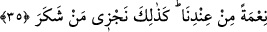
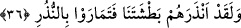
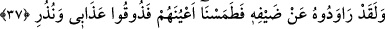

Allah onların üzerine çakıl taşları yağdırmak suretiyle azâb etti.
Bundan dolayıdır ki, Ahmed b. Hanbel (r.a.) lûtîlik yapanın cezâsının, evli olmasa da
recm edilmek olduğuna hükmetmiştir. Dahası onlar, ellerinde çakıl taşları bulunan bir
çanakla bir yere otururlar, yoldan biri geçtiğinde ellerindeki çakıl taşlarıyla yoldan
geçenleri taşlarlardı. Taşı kime isabet ederse, onu kendisinin sayardı. Oturdukları yerde
çekinmeden yellenirlerdi. Bu ahlâksızlıklarına karşılık rüzgarla azâb olundular.
Üzerinde yaşadıkları köy ve şehirlerinin alt üst olması, normal ilişkiyi kadınları ile
yapma yolunu değiştirip sakalı bitmemiş gençlere musallat oldukları içindir. Allah
onları, eylemlerine uyan bir cezâ ile cezâlandırdı. Normal ilişki yolunu terk edip cinsel
ilişkilerini arkadan yaparak gerçeği değiştirdikleri için böyle cezâlandılar.
“Ancak Lût âilesini seher vakti kurtardık.” Bunlar on üç kişi olup azaptan kurtulmuş
olan Lût (a.s.)’ın âile fertleridir. Kurtulanların, Lût ve iki kızı olduğu da söylenmiştir.
Keşfü’l-esrâr adlı eserde denilmiştir ki, Lût (a.s.)’ın âilesinden maksad, kızları ile
ona inanan kızlarının eşleridir. Seher vakti, gecenin son kısmı veya gecenin son altıda
biridir. Müfredât’da, “seher, gecenin son karanlıklarının gündüzün aydınlıklarına
karışmasıdır” denmiştir.
Rivâyete göre, Allah Lût (a.s.)’a gecenin bir kısmında, kendisine inananlarla
çıkmasını emretti. Lût (a.s.) ve ona inananlar çıktıktan sonra, seher vaktinde kavmine
azâb indi. Lût (a.s.)’ın âilesiyle, onlardan inanıp dinine uyanlar kasdedilmiştir.
35. Katımızdan bir nimet olarak. Biz şükredeni işte böyle mükâfâtlandırırız.
Yâni tarafımızdan ihsân edilen nimet olarak Lût ve âilesini kurtardık. Onların
kurtarılması onlara ihsân edilen nimettir. Bu hayret verici mükâfât ile, îman ve itâat
ederek şükreden mü’minleri böylece kurtarırız.
36. Andolsun ki, Lût onları bizim şiddetli azabımızla uyardı. Fakat onlar bu
tehdidleri kuşkuyla karşıladılar.
Yâni şiddetli azab ve yakalamamızdan sakındırdı. Fakat onlar kuşkuya düşerek
yalanladılar.